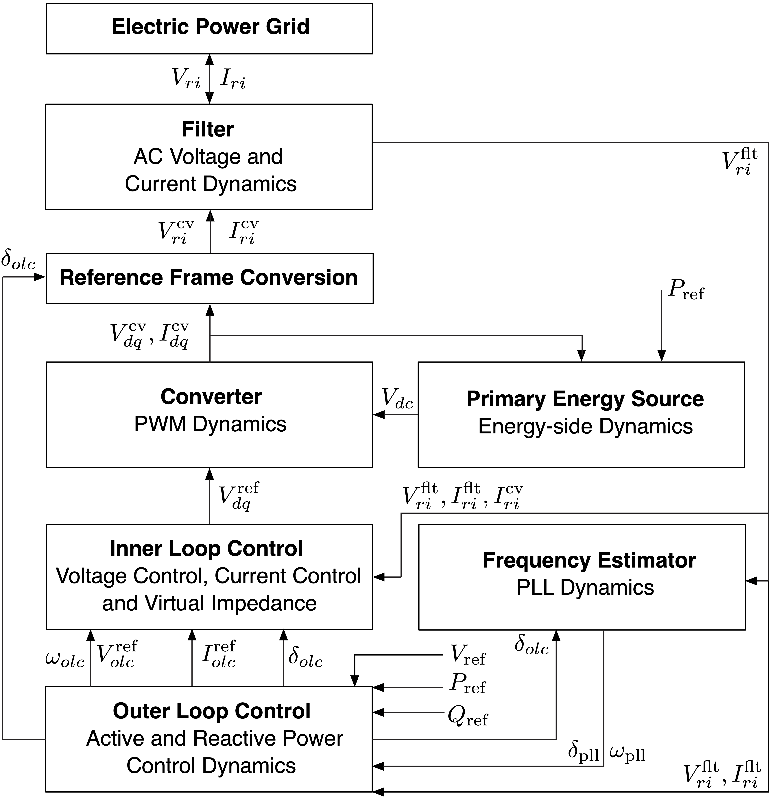

Adding Data for Dynamic Simulations
To follow along, you can download this tutorial as a Julia script (.jl) or Jupyter notebook (.ipynb).
In this tutorial, we are going to add dynamic data to a power System, including a dynamic generator suitable for phasor-type simulations, as well as a dynamic inverter and dynamic lines necessary for more complex EMT (electro-magnetic transient) simulations. To run a dynamic simulation in Sienna\Dyn using PowerSimulationsDynamics.jl, two data layers are required:
- A base layer of static components, which includes the data needed to run a power flow problem
- An additional layer of dynamic components, which define differential equations to run a transient simulation
We'll define these two layers sequentially.
Defining the Static Data Layer
Instead of defining the static data in the System manually, we will load an existing three-bus system using PowerSystemCaseBuilder.jl to use as a starting point. Start by importing these packages:
using PowerSystems
using PowerSystemCaseBuilder
import PowerSystems as PSY;To create the system, load pre-existing data for a 3-bus system using PowerSystemCaseBuilder.jl:
threebus_sys = build_system(PSIDSystems, "3 Bus Inverter Base")| System | |
| Property | Value |
|---|---|
| Name | |
| Description | |
| System Units Base | SYSTEM_BASE |
| Base Power | 100.0 |
| Base Frequency | 60.0 |
| Num Components | 16 |
| Static Components | |
| Type | Count |
|---|---|
| ACBus | 3 |
| Arc | 3 |
| Area | 1 |
| Line | 3 |
| LoadZone | 1 |
| StandardLoad | 3 |
| ThermalStandard | 2 |
See that there is a table of "Static Components", which contains the steady state data needed for power flow analysis, but no "Dynamic" data yet to define the differential equations for transient simulations. Let's view the generators in the system with show_components, including which bus they are connected at:
show_components(ThermalStandard, threebus_sys, [:bus]) ThermalStandard
┌─────────────────┬───────────┬──────────────┐
│ name │ available │ bus │
├─────────────────┼───────────┼──────────────┤
│ generator-102-1 │ true │ ACBus: BUS 2 │
│ generator-103-1 │ true │ ACBus: BUS 3 │
└─────────────────┴───────────┴──────────────┘Notice that there are generators connected at Buses 2 and 3, but not Bus 1. Now, we are going to add the data needed to run an EMT simulation. We will add an infinite voltage source to Bus 1, which is the last component we need to complete the static data layer. Then, we will add a dynamic generator or inverter model to the two generators, as well as adding dynamic lines.
Add an Infinite Voltage Source
Add a infinite voltage source with small impedance to Bus 1 (the reference bus). First, retrieve the reference bus using get_components:
slack_bus = first(get_components(x -> get_bustype(x) == ACBusTypes.REF, Bus, threebus_sys))ACBus: BUS 1:
number: 101
name: BUS 1
available: true
bustype: ACBusTypes.REF = 3
angle: 0.0
magnitude: 1.02
voltage_limits: (min = 0.9, max = 1.1)
base_voltage: 138.0
area: Area: 1
load_zone: LoadZone: 1
ext: Dict{String, Any}()
InfrastructureSystems.SystemUnitsSettings:
base_value: 100.0
unit_system: UnitSystem.SYSTEM_BASE = 0
has_supplemental_attributes: false
has_time_series: falseNotice we filtered by the bus type to get the bus(es) we wanted. Next, manually define a Source:
inf_source = Source(;
name = "InfBus", #name
available = true, #availability
active_power = 0.0,
reactive_power = 0.0,
bus = slack_bus, #bus
R_th = 0.0, #Rth
X_th = 5e-6, #Xth
);And add it to the system:
add_component!(threebus_sys, inf_source)This completes the first layer of static data, using components similar to those we added manually in the Create and Explore a Power System tutorial.
Adding a Dynamic Generator
Now, we will connect a classic machine model to the generator at bus 102. Dynamic generator devices are composed by 5 components: a Machine, Shaft, Automatic Voltage Regulator (AVR), Power System Stabilizer (PSS), and Prime Mover and Turbine Governor. For each of those 5 components, we will select a specific model that defines the data and differential equations for that component, and then use those 5 components to define the complete dynamic generator.

When defining dynamic data, by convention PowerSystems.jl assumes that all data is in DEVICE_BASE.
First, define a Machine that describes the stator electro-magnetic dynamics:
machine_oneDoneQ = OneDOneQMachine(;
R = 0.0,
Xd = 1.3125,
Xq = 1.2578,
Xd_p = 0.1813,
Xq_p = 0.25,
Td0_p = 5.89,
Tq0_p = 0.6,
)OneDOneQMachine(0.0, 1.3125, 1.2578, 0.1813, 0.25, 5.89, 0.6, Dict{String, Any}(), [:eq_p, :ed_p], 2, InfrastructureSystems.InfrastructureSystemsInternal(Base.UUID("f3293b50-3e3c-4f34-b6e7-54fc2535d384"), nothing, nothing, nothing))Notice that we selected a specific model, OneDOneQMachine, with the parameters tailored to a One-d-one-q dynamic machine model. Next, define a specific Shaft model, SingleMass that describes the rotor electro-mechanical dynamics:
shaft_no_damping = SingleMass(;
H = 3.01, #(M = 6.02 -> H = M/2)
D = 0.0,
)SingleMass(3.01, 0.0, Dict{String, Any}(), [:δ, :ω], 2, InfrastructureSystems.InfrastructureSystemsInternal(Base.UUID("febd5b9c-2e62-444e-b4c4-e73ef5ba0e45"), nothing, nothing, nothing))Represent the electromotive dynamics of the AVR controller using a specific Automatic Voltage Regulator model, AVRTypeI:
avr_type1 = AVRTypeI(; # Type I: Resembles a DC1 AVR
Ka = 20.0,
Ke = 0.01,
Kf = 0.063,
Ta = 0.2,
Te = 0.314,
Tf = 0.35,
Tr = 0.001,
Va_lim = (min = -5.0, max = 5.0),
Ae = 0.0039, #1st ceiling coefficient
Be = 1.555, #2nd ceiling coefficient
)AVRTypeI(20.0, 0.01, 0.063, 0.2, 0.314, 0.35, 0.001, (min = -5.0, max = 5.0), 0.0039, 1.555, 1.0, Dict{String, Any}(), [:Vf, :Vr1, :Vr2, :Vm], 4, StateTypes[StateTypes.Differential = 1, StateTypes.Differential = 1, StateTypes.Differential = 1, StateTypes.Differential = 1], InfrastructureSystems.InfrastructureSystemsInternal(Base.UUID("77458a0a-c05d-4323-9788-0d9a81d1cf5b"), nothing, nothing, nothing))Define a fixed efficiency Prime Mover and Turbine Governor with TGFixed:
tg_none = TGFixed(; efficiency = 1.0) # No Turbine GovernorTGFixed(1.0, 1.0, Dict{String, Any}(), Symbol[], 0, InfrastructureSystems.InfrastructureSystemsInternal(Base.UUID("99405327-61fe-48a6-9948-9b4734ea0715"), nothing, nothing, nothing))See that we are modeling a machine that does not include a Turbine Governor (or PSS below), but you must define components for them to build a complete machine model. Similarly, define a PSS using PSSFixed, which is used to describe the stabilization signal for the AVR:
pss_none = PSSFixed(; V_pss = 0.0) # No PSSPSSFixed(0.0, Dict{String, Any}(), Symbol[], 0, InfrastructureSystems.InfrastructureSystemsInternal(Base.UUID("9ce2f31e-3305-4ef3-a11d-281ec41b846a"), nothing, nothing, nothing))Now, we are ready to add a dynamic generator to the static generator at bus 102. First, let's get that static generator:
static_gen = get_component(Generator, threebus_sys, "generator-102-1")ThermalStandard: generator-102-1:
name: generator-102-1
available: true
status: true
bus: ACBus: BUS 2
active_power: 0.7
reactive_power: 0.0
rating: 3.333526661060325
active_power_limits: (min = 0.0, max = 3.18)
reactive_power_limits: (min = -1.0, max = 1.0)
ramp_limits: (up = 3.18, down = 3.18)
operation_cost: ThermalGenerationCost composed of variable: CostCurve{QuadraticCurve}
base_power: 100.0
time_limits: nothing
must_run: false
prime_mover_type: PrimeMovers.OT = 19
fuel: ThermalFuels.OTHER = 35
services: 0-element Vector{Service}
time_at_status: 10000.0
dynamic_injector: nothing
ext: Dict{String, Any}("WPF" => 1.0, "GTAP" => 1.0, "IREG" => 0, "WMOD" => 0, "rt" => 0.0, "x" => 1.0, "xt" => 0.0, "r" => 0.0, "RMPCT" => 100.0)
InfrastructureSystems.SystemUnitsSettings:
base_value: 100.0
unit_system: UnitSystem.SYSTEM_BASE = 0
has_supplemental_attributes: false
has_time_series: falseNotice that its dynamic_injector field is currently nothing. Use its name and the 5 components above to define its DynamicGenerator model:
dynamic_gen = DynamicGenerator(;
name = get_name(static_gen),
ω_ref = 1.0, # frequency reference set-point
machine = machine_oneDoneQ,
shaft = shaft_no_damping,
avr = avr_type1,
prime_mover = tg_none,
pss = pss_none,
)
DynamicGenerator: generator-102-1:
name: generator-102-1
ω_ref: 1.0
machine: OneDOneQMachine
shaft: SingleMass
avr: AVRTypeI
prime_mover: TGFixed
pss: PSSFixed
base_power: 100.0
n_states: 8
states: [:eq_p, :ed_p, :δ, :ω, :Vf, :Vr1, :Vr2, :Vm]
ext: Dict{String, Any}()
internal: InfrastructureSystems.InfrastructureSystemsInternal
has_supplemental_attributes: false
has_time_series: falseSee that the specific component models that we selected and defined above were used to specify the states needed to model this generator in a dynamic simulation. Finally, use the dynamic version of add_component! to add this data to the System:
add_component!(threebus_sys, dynamic_gen, static_gen)Notice that unlike static components, which are just added to the System, this dynamic component is added to a specific static component within the System.
To define identical dynamic devices for multiple generators at once, define the pieces of the generator model as functions, such as:
avr_type1() = AVRTypeI(...When called in the DynamicGenerator constructor, this will create a new AVR for each generator, so they are different in memory. Later, if you decide to modify the AVR parameters for a specific generator, it will not modify the AVR in another generator.
Recall that you can print the system to see a summary of its data:
threebus_sys| System | |
| Property | Value |
|---|---|
| Name | |
| Description | |
| System Units Base | SYSTEM_BASE |
| Base Power | 100.0 |
| Base Frequency | 60.0 |
| Num Components | 18 |
| Static Components | |
| Type | Count |
|---|---|
| ACBus | 3 |
| Arc | 3 |
| Area | 1 |
| Line | 3 |
| LoadZone | 1 |
| Source | 1 |
| StandardLoad | 3 |
| ThermalStandard | 2 |
| Dynamic Components | |
| Type | Count |
|---|---|
| DynamicGenerator{OneDOneQMachine, SingleMass, AVRTypeI, TGFixed, PSSFixed} | 1 |
See that a new table has been added: "Dynamic Components." Also, print the static generator to double-check the dynamic layer has been added:
static_genThermalStandard: generator-102-1:
name: generator-102-1
available: true
status: true
bus: ACBus: BUS 2
active_power: 0.7
reactive_power: 0.0
rating: 3.333526661060325
active_power_limits: (min = 0.0, max = 3.18)
reactive_power_limits: (min = -1.0, max = 1.0)
ramp_limits: (up = 3.18, down = 3.18)
operation_cost: ThermalGenerationCost composed of variable: CostCurve{QuadraticCurve}
base_power: 100.0
time_limits: nothing
must_run: false
prime_mover_type: PrimeMovers.OT = 19
fuel: ThermalFuels.OTHER = 35
services: 0-element Vector{Service}
time_at_status: 10000.0
dynamic_injector: DynamicGenerator: generator-102-1
ext: Dict{String, Any}("WPF" => 1.0, "GTAP" => 1.0, "IREG" => 0, "WMOD" => 0, "rt" => 0.0, "x" => 1.0, "xt" => 0.0, "r" => 0.0, "RMPCT" => 100.0)
InfrastructureSystems.SystemUnitsSettings:
base_value: 100.0
unit_system: UnitSystem.SYSTEM_BASE = 0
has_supplemental_attributes: false
has_time_series: falseVerify that dynamic_injector now contains our dynamic generator model. Up to this point, you have added the dynamic data necessary to do a phaser-type simulation, which focuses on machine behavior. Now we will also add dynamic inverters and lines to enable EMT simulations.
Adding a Dynamic Inverter
Next we will connect a Virtual Synchronous Generator Inverter at bus 103. An inverter is composed of Converter, OuterControl, InnerControl, DCSource, FrequencyEstimator, and Filter components:
As we did for the generator, we will define each of these six components with a specific model, which defines its differential equations. First, define an AverageConverter as the specific model for the Converter component:
converter_high_power() = AverageConverter(;
rated_voltage = 138.0,
rated_current = 100.0,
)converter_high_power (generic function with 1 method)Recall from the tip above that we can define these components as functions instead of objects for reusability across multiple generators, and notice that that is what we have done here. Define OuterControl using Virtual Inertia for the active power control and ReactivePowerDroop for the reactive power control:
outer_control() = OuterControl(
VirtualInertia(; Ta = 2.0, kd = 400.0, kω = 20.0),
ReactivePowerDroop(; kq = 0.2, ωf = 1000.0),
)outer_control (generic function with 1 method)Define an InnerControl as a Voltage+Current Controller with Virtual Impedance, using VoltageModeControl:
inner_control() = VoltageModeControl(;
kpv = 0.59, #Voltage controller proportional gain
kiv = 736.0, #Voltage controller integral gain
kffv = 0.0, #Binary variable enabling voltage feed-forward in current controllers
rv = 0.0, #Virtual resistance in pu
lv = 0.2, #Virtual inductance in pu
kpc = 1.27, #Current controller proportional gain
kic = 14.3, #Current controller integral gain
kffi = 0.0, #Binary variable enabling the current feed-forward in output of current controllers
ωad = 50.0, #Active damping low pass filter cut-off frequency
kad = 0.2, #Active damping gain
)inner_control (generic function with 1 method)Define a FixedDCSource for the DCSource:
dc_source_lv() = FixedDCSource(; voltage = 600.0)dc_source_lv (generic function with 1 method)Define a FrequencyEstimator as a phase-locked loop (PLL) using KauraPLL:
pll() = KauraPLL(;
ω_lp = 500.0, #Cut-off frequency for LowPass filter of PLL filter.
kp_pll = 0.084, #PLL proportional gain
ki_pll = 4.69, #PLL integral gain
)pll (generic function with 1 method)Finally, define an LCLFilter for the Filter:
filt() = LCLFilter(;
lf = 0.08,
rf = 0.003,
cf = 0.074,
lg = 0.2,
rg = 0.01,
)filt (generic function with 1 method)Now, use those six functions to define a complete dynamic inverter by getting the static component at bus 103:
gen_103 = get_component(Generator, threebus_sys, "generator-103-1");using it and our six functions to define a DynamicInverter:
dynamic_inv = DynamicInverter(;
name = get_name(gen_103),
ω_ref = 1.0, # frequency reference set-point
converter = converter_high_power(),
outer_control = outer_control(),
inner_control = inner_control(),
dc_source = dc_source_lv(),
freq_estimator = pll(),
filter = filt(),
)
DynamicInverter: generator-103-1:
name: generator-103-1
ω_ref: 1.0
converter: AverageConverter
outer_control: OuterControl{VirtualInertia, ReactivePowerDroop}
inner_control: VoltageModeControl
dc_source: FixedDCSource
freq_estimator: KauraPLL
filter: LCLFilter
limiter: nothing
base_power: 100.0
n_states: 19
states: [:θ_oc, :ω_oc, :q_oc, :ξd_ic, :ξq_ic, :γd_ic, :γq_ic, :ϕd_ic, :ϕq_ic, :vd_pll, :vq_pll, :ε_pll, :θ_pll, :ir_cnv, :ii_cnv, :vr_filter, :vi_filter, :ir_filter, :ii_filter]
ext: Dict{String, Any}()
internal: InfrastructureSystems.InfrastructureSystemsInternal
has_supplemental_attributes: false
has_time_series: falseand adding it to the System:
add_component!(threebus_sys, dynamic_inv, gen_103)Both generators have now been updated with dynamic data. Let's complete the System updates by adding dynamic lines.
Adding Dynamic Lines
A System must have at least two buses and one branch to run a dynamic simulation in PowerSimulationsDynamics.jl.
Let's review the AC branches currently in the system:
get_components(ACBranch, threebus_sys)ACBranch Counts:
Line: 3
Notice that we have three static Line components. Let's also print the first line to review its format:
first(get_components(Line, threebus_sys))Line: BUS 1-BUS 3-i_1:
name: BUS 1-BUS 3-i_1
available: true
active_power_flow: 0.0
reactive_power_flow: 0.0
arc: Arc: BUS 1 -> BUS 3
r: 0.01
x: 0.12
b: (from = 0.1, to = 0.1)
rating: 2.5
angle_limits: (min = -1.0472, max = 1.0472)
rating_b: 2.5
rating_c: 2.5
g: (from = 0.0, to = 0.0)
services: 0-element Vector{Service}
ext: Dict{String, Any}("LEN" => 0.0)
InfrastructureSystems.SystemUnitsSettings:
base_value: 100.0
unit_system: UnitSystem.SYSTEM_BASE = 0
has_supplemental_attributes: false
has_time_series: falseSee that these components do not have the fields for dynamic modeling, such as fields for different states. Let's update that by cycling through these lines and using DynamicBranch to extend each static line with the necessary fields:
for l in get_components(Line, threebus_sys)
# create a dynamic branch
dyn_branch = DynamicBranch(l)
# add dynamic branch to the system, replacing the static branch
add_component!(threebus_sys, dyn_branch)
end┌ Warning: struct DynamicBranch does not exist in validation configuration file, validation skipped
└ @ InfrastructureSystems ~/.julia/packages/InfrastructureSystems/u7AYS/src/validation.jl:51
┌ Warning: struct DynamicBranch does not exist in validation configuration file, validation skipped
└ @ InfrastructureSystems ~/.julia/packages/InfrastructureSystems/u7AYS/src/validation.jl:51
┌ Warning: struct DynamicBranch does not exist in validation configuration file, validation skipped
└ @ InfrastructureSystems ~/.julia/packages/InfrastructureSystems/u7AYS/src/validation.jl:51Take a look at the AC branches in the system again:
branches = get_components(ACBranch, threebus_sys)ACBranch Counts:
DynamicBranch: 3
Notice that now there are 3 DynamicBranch components instead of the Line components. Let's take a look by printing the first one:
first(branches)DynamicBranch: BUS 1-BUS 3-i_1:
branch: Line: BUS 1-BUS 3-i_1
n_states: 2
states: [:Il_R, :Il_I]
InfrastructureSystems.SystemUnitsSettings:
base_value: 100.0
unit_system: UnitSystem.SYSTEM_BASE = 0
has_supplemental_attributes: false
has_time_series: falseObserve that this is a wrapper around the static data, with the additional states data for dynamic modeling. Finally, let's print the System again to summarize our additions:
threebus_sys| System | |
| Property | Value |
|---|---|
| Name | |
| Description | |
| System Units Base | SYSTEM_BASE |
| Base Power | 100.0 |
| Base Frequency | 60.0 |
| Num Components | 19 |
| Static Components | |
| Type | Count |
|---|---|
| ACBus | 3 |
| Arc | 3 |
| Area | 1 |
| DynamicBranch | 3 |
| LoadZone | 1 |
| Source | 1 |
| StandardLoad | 3 |
| ThermalStandard | 2 |
| Dynamic Components | |
| Type | Count |
|---|---|
| DynamicGenerator{OneDOneQMachine, SingleMass, AVRTypeI, TGFixed, PSSFixed} | 1 |
| DynamicInverter{AverageConverter, OuterControl, VoltageModeControl, FixedDCSource, KauraPLL, LCLFilter, Nothing} | 1 |
Verify that the additions were successful, with an added voltage Source, DynamicBranches replacing the static Line, and two new dynamic components with the generator and inverter models.
Next Steps
In this tutorial, you have updated a static system with a second dynamic data layer. The data you added can enable a phasor-based simulation using the dynamic generator, or a more complex EMT simulation with the additional dynamic inverter and dynamic lines. Next, you might like to:
- Read more about the static and dynamic data layers and the dynamic data format in Dynamic Devices.
- Review the specific subsystem models available in
PowerSystems.jlfor Machine, Shaft, AVR, PSS, Prime Mover and Turbine Governor, Converter, OuterControl, InnerControl, DCSource, FrequencyEstimator, and Filter components - Explore
PowerSimulationsDynamics.jlfor dynamics modeling in Sienna\Dyn